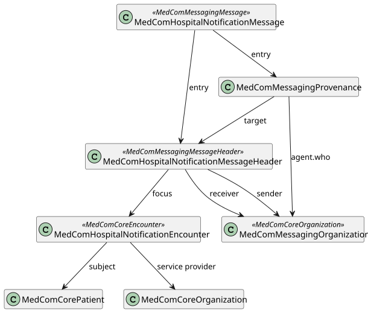
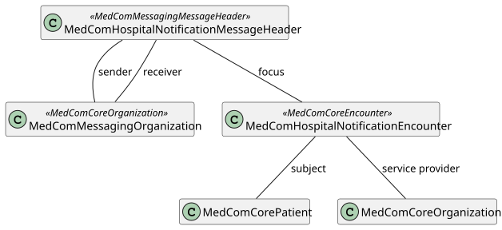

Links: Table of Contents | QA Report | Accessibility statement (Tilgængelighedserklæring)
http://medcomfhir.dk/ig/terminology/CodeSystem/medcom-messaging-activityCodes
http://medcomfhir.dk/ig/terminology/CodeSystem/medcom-messaging-destinationUse
http://medcomfhir.dk/ig/terminology/CodeSystem/medcom-messaging-eventCodes
This fragment is not visible to the reader
This publication includes IP covered under the following statements.
| Type | Reference | Content |
|---|---|---|
| web | sor2.sum.dsdn.dk | https://sor2.sum.dsdn.dk/#id=953741000016009 |
| web | sor2.sum.dsdn.dk | https://sor2.sum.dsdn.dk/#id=265161000016000 |
| web | www.medcom.dk |
|
| web | www.medcom.dk |
IG © 2021+ MedCom
. Package medcom.fhir.dk.hospitalnotification#3.0.2 based on FHIR 4.0.1
. Generated 2026-02-10
Links: Table of Contents | QA Report | Accessibility statement (Tilgængelighedserklæring) |
| web | www.was.digst.dk | Links: Table of Contents | QA Report | Accessibility statement (Tilgængelighedserklæring) |
| web | medcomdk.github.io | This profile is used as the Encounter resource for the HospitalNotification message. The HospitalNotificationEncounter inherits from the MedComCoreEncounter. Besides the references shown on the figure below, the MedComHospitalNotificationEncounter contains an episode of care identifier (Danish: forløbsid), a status describing the status of the encounter e.g., if the patient is onleave and the class of the admission, which can be either inpatient or emergency . Both status and class shall be included in all messages and depending on the status of the encounter, the status and class shall be assigned to different codes. Here you the find the combination of codes . |
| web | medcomdk.github.io | The HospitalNotification message is sent without patient consent, why only a limited data set is allowed to transmit due to Danish legislation. For this reason, is the HospitalNotificationEncounter profile quite narrow. More information about the legal aspects can be found here . |
| web | medcomfhir.dk | An example of different serviceProvider and sender organisation can be found here . Other examples will have the same organisation as serviceProvider and sender. |
| web | medcomfhir.dk | A simplified example with two episode of care identifieres can be found here and a FHIR example with two episode of care identifieres can be found here Other examples will have just one episode of care identifier. |
| web | medcomfhir.dk | HospitalNotification Encounter - STIN and HospitalNotification Encounter - STAA |
| web | medcomfhir.dk | HospitalNotification Encounter - STIN and HospitalNotification Encounter - STAA |
| web | medcomfhir.dk | HospitalNotification Encounter - SLHJ (inpatient) and HospitalNotification Encounter - MORS (inpatient) |
| web | medcomfhir.dk | HospitalNotification Encounter - SLHJ (inpatient) and HospitalNotification Encounter - MORS (inpatient) |
| web | medcomfhir.dk | HospitalNotification Encounter - STOR |
| web | medcomfhir.dk | HospitalNotification Encounter - SLOR |
| web | medcomdk.github.io | In cases where a patient is transferred to a hospital in the same region or in another region, or a hospitalisation changes from 'acute ambulant' to 'inpatient', a new start hospital stay HospitalNotification shall be sent. These three cases shall result in a new instance of the Encounter profile which has a new Encounter.period.start representing the time of the change in the hospitalisation. All cases are described in the Clinical guidelines for application . |
| web | en.wikipedia.org | Both Bundle.link and Bundle.entry.link are defined to support providing additional context when Bundles are used (e.g. HATEOAS ). |
| web | medcomdk.github.io | The request for a report of admission from a municipality shall be sent when a patient is initially admitted either as an inpatient or emergency admission or when an patient admitted as an inpatient is moved to a hospital in another region. Technically this includes setting the MessageHeader.extension.reportOfAdmissionFlag to 'true' and include a reference to the receiver of the report of admission in the element MessageHeader.extension.reportOfAdmissionRecipient. Section 2.1, in the use case document describes more thoroughly in which cases the report of admission flag shall be sat to 'true'. The request for a report of admission should be made automatically. |
| web | svn.medcom.dk | The IG contains profiles for MedCom HospitalNotification (Dansk: Sygehusadvis), which is used to inform a municipality about hospitalization of a patient. The HospitalNotification contributes to securing the foundation for a coherent clinical pathway across sectors. The specific purpose of the HospitalNotification is to inform the citizen's current care and health provider in the primary sector about the start and end of the citizen's stay at the hospital. It makes it possible to pause the current care and health providers' services during the hospital stay and resume them when it ends. At the same time, the HospitalNotification can trigger the automatic sending of Report of Admission ( XDIS16 ) from the receiver's system, which gives the health professionals an overview of the citizen's current services, level of function and health-related problems. The HospitalNotification also contains notification of the patient's leave from the hospital stay and acute ambulant care. |
| web | medcomdk.github.io | More information about the clinical guidelines and legislation can be found here. |
| web | medcomfhir.dk | The MedComHospitalNotificationMessage profile constrains the MedComMessagingMessage to further use the MedComHospitalNotificationMessageHeader and to require exactly one patient resource in the message. Furthermore, it constrains the Provenance.activity to contain only activities from the MedComHospitalNotificationMessageActivities ValueSet. |
| web | medcomfhir.dk | The MedComHospitalNotificationMessageHeader profile constrains the MedComMessagingMessageHeader further to specify the fixed coding for this message and require a focus of the message to be a MedComHospitalNotificationEncounter. |
| web | medcomfhir.dk | The MedComHospitalNotificationEncounter profile contains the main clinical content of the message. It constrains the MedComCoreEncounter further to require a episodeOfCare-identifier and restricts the status and class to ValueSet of relevant values. The start time of the encounter and a reference to the service provider organization are also mandatory. Most other values are disallowed due to the legislation. |
| web | medcomdk.github.io | HospitalNotification messages are generated and sent based on real-time registration in the EPR/PAS system. In case the EPR allows future registrations of planned contacts or a period of leave, the HospitalNotifications shall only be triggered when the event occurs, i.e. at the patient's physical attendance, as described in the Clinical guidelines for application . |
| web | medcomfhir.dk | Encounter-timestamps represent the time of an event. For receiving systems, this is the timestamps that must be displayed for the end user in the HospitalNotification as ‘date and time of start/end for the event’. The usage of these timestamps is more thoroughly described here. |
| web | medcomdk.github.io | All profiles shall have a global unique id by using an UUID. Read more about the use of ids here . |
| web | medcomdk.github.io | The simplified examples contain the required content of a HospitalNotification message. Throughout this section different activity codes and statuses are used. To get an overview of all the codes and statuses, please go to GitHub pages for HospitalNotification . |
| web | medcomfhir.dk | In the sections below is a limited number HospitalNotifications simplified examples. More examples of a HospitalNotification message can be found here . For examples of a profile, take a look under the tab 'Examples' on the site for the given profile. |
| web | medcomfhir.dk | Click here to see the generated example of simplified example number 1. |
| web | medcomfhir.dk | Click here to see the generated example of simplified example number 2. |
| web | medcomfhir.dk | Click here to see the generated example of simplified example number 3. |
| web | medcomfhir.dk | Click here to see the generated example of simplified example number 4. |
| web | medcomfhir.dk | Click here to see the generated example of simplified example number 5. |
| web | medcomfhir.dk | Click here to see the generated example of simplified example number 6. |
| web | hl7.dk | This IG has a dependency to the MedCom Core IG , MedCom Messaging IG and DK-core v. 2.0.0 , where the latter is defined by HL7 Denmark . This is currently reflected in MedComHospitalNotificationMessage, MedComHospitalNotificationMessageHeader and MedComHospitalNotificationEncounter which all inherits from profiles defined in MedComCore or MedComMessaging IG. Further, it is reflected in references to MedComCorePatient, MedComCoreOrganization and MedComMessagingOrganization. |
| web | hl7.dk | This IG has a dependency to the MedCom Core IG , MedCom Messaging IG and DK-core v. 2.0.0 , where the latter is defined by HL7 Denmark . This is currently reflected in MedComHospitalNotificationMessage, MedComHospitalNotificationMessageHeader and MedComHospitalNotificationEncounter which all inherits from profiles defined in MedComCore or MedComMessaging IG. Further, it is reflected in references to MedComCorePatient, MedComCoreOrganization and MedComMessagingOrganization. |
| web | medcomfhir.dk | Content in this IG can be downloaded in npm format under Download . This can be used to validate locale FHIR profiles against. |
| web | medcomdk.github.io | On the introduction page for HospitalNotification the following documentation can be found: |
| web | github.com | MedComs FHIR profiles and extension are managed in GitHub under MedCom: Source code |
| web | medcomdk.github.io | A description of governance concerning change management and versioning of MedComs FHIR artefacts, can be found on the link. |
| web | www.medcom.dk | MedCom is responsible for this IG. |
|
hospitalnotification/HospitalNotification.svg  |
hospitalnotification/HospitalNotificationEncounter.svg 
|
|
hospitalnotification/HospitalNotificationMessageHeader.svg  |
tree-filter.png 
|
{kind=link}